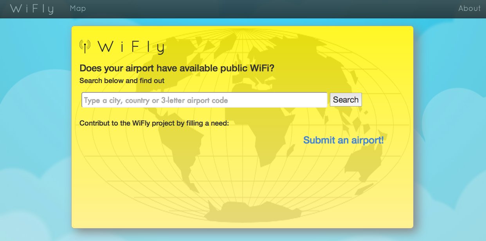

A sampling of some of the work I've done while building my coding skills at General Assembly's WDI course:
BandHub
Ruby on Rails | HTML5 | CSS3 | JavaScript | jQuery | Devise/OmniAuth | Echonest, SongKick APIs

"BandHub" is a single page app (SPA) that lets users search for and save their favorite band to a profile page in order to keep up with their latest news and information.
MoviePop!
Ruby on Rails | HTML5 | CSS3 | JavaScript | jQuery | Bootstrap | Devise | MyMovieAPI.com

"MoviePop!" is another SPA that lets you search for, save, and check off your favorite movies.
Treasure Hunter
Ruby on Rails | HTML5 | CSS3 | JS | CoffeeScript | GoogleMaps & Twilio Api | Devise


"Treasure Hunter" is a urban scavenger hunt-type game played on your mobile phone. Players can be a Huntmaster and create hunts for others or be Hunters and play to get clues and find secret locations created by the Huntmaster around their city. Currently in alpha.
WiFly
Ruby on Rails | HTML5 | CSS3 | Bootstrap

WiFly is a web app that allows you to search for airports around the world to see if there is an available WiFi signal, if it's free and if it's not, how much it costs to use. Data is crowdsourced. Currently in alpha.